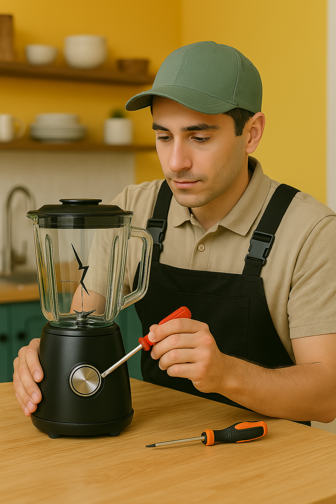
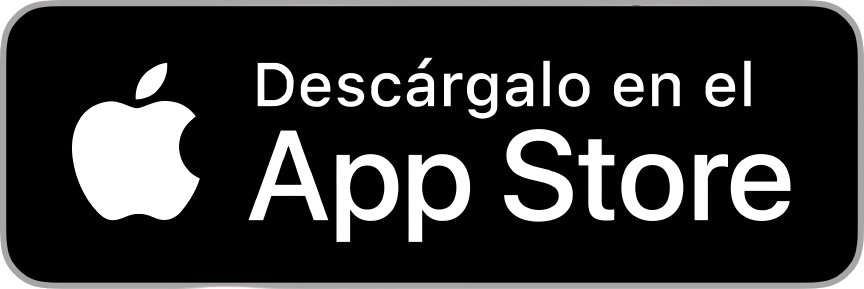

USUARIOS
Mediante nuestros 2 tipos de usuarios podrán satisfacerse las necesidades de reparación de artefactos
Usuario Solicitante
Usuario con un artefacto dañado que busca reparar y así evitar botarlo.

Usuario Técnico
Usuario que busca reparar artefactos de otros usuarios por un monto de dinero.
QUIÉNES SOMOS
FIXEM es una empresa nueva e innovadora con un propósito e importancia ambiental muy marcados, sin dejar de lado nuestra conciencia social.
MANUEL ANGEL SANCHEZ ARENAS
ADRIEL JOSE FLORES MASIAS
BRANDON WILDER SOTO PALACIOS
JEAN POOL ALEXANDER ARIAS TASAYCO
LUIS ALEXIS BARDALES TEJADA
Descarga nuestra aplicación móvil desde las principales tiendas digitales
